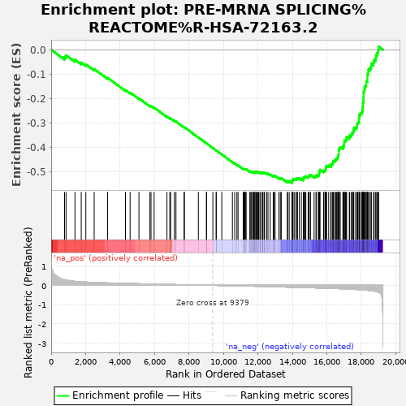

| | | Dataset | rankedList |
| Phenotype | NoPhenotypeAvailable |
| Upregulated in class | na_neg |
| GeneSet | PRE-MRNA SPLICING%REACTOME%R-HSA-72163.2 |
| Enrichment Score (ES) | -0.5460702 |
| Normalized Enrichment Score (NES) | -2.516679 |
| Nominal p-value | 0.0 |
| FDR q-value | 0.0 |
| FWER p-Value | 0.0 |
Table: GSEA Results Summary

Fig 1: Enrichment plot: PRE-MRNA SPLICING%REACTOME%R-HSA-72163.2
Profile of the Running ES Score & Positions of GeneSet Members on the Rank Ordered List
| PROBE | GENE SYMBOL | GENE_TITLE | RANK IN GENE LIST | RANK METRIC SCORE | RUNNING ES | CORE ENRICHMENT | | 1 | PCBP2 | | | 778 | 0.289 | -0.0291 | No |
| 2 | YBX1 | | | 864 | 0.273 | -0.0224 | No |
| 3 | POLR2I | | | 1382 | 0.209 | -0.0410 | No |
| 4 | RBM8A | | | 1746 | 0.184 | -0.0526 | No |
| 5 | CASC3 | | | 2013 | 0.169 | -0.0596 | No |
| 6 | PCBP1 | | | 2497 | 0.149 | -0.0789 | No |
| 7 | HNRNPH2 | | | 3277 | 0.124 | -0.1147 | No |
| 8 | SF3B4 | | | 4313 | 0.098 | -0.1649 | No |
| 9 | PAPOLA | | | 4583 | 0.092 | -0.1753 | No |
| 10 | LSM7 | | | 5095 | 0.082 | -0.1987 | No |
| 11 | PQBP1 | | | 5734 | 0.068 | -0.2294 | No |
| 12 | TXNL4A | | | 5796 | 0.067 | -0.2299 | No |
| 13 | POLR2E | | | 5976 | 0.064 | -0.2367 | No |
| 14 | POLR2A | | | 6722 | 0.050 | -0.2737 | No |
| 15 | LSM2 | | | 6885 | 0.047 | -0.2803 | No |
| 16 | SF3A2 | | | 6938 | 0.046 | -0.2812 | No |
| 17 | SF3A1 | | | 7154 | 0.042 | -0.2907 | No |
| 18 | POLR2K | | | 7246 | 0.040 | -0.2939 | No |
| 19 | SF3B6 | | | 7716 | 0.030 | -0.3172 | No |
| 20 | SLU7 | | | 7735 | 0.030 | -0.3170 | No |
| 21 | BUD31 | | | 8545 | 0.015 | -0.3588 | No |
| 22 | POLR2L | | | 9014 | 0.007 | -0.3830 | No |
| 23 | HNRNPUL1 | | | 9020 | 0.006 | -0.3830 | No |
| 24 | SUGP1 | | | 9387 | -0.000 | -0.4022 | No |
| 25 | HNRNPK | | | 9577 | -0.004 | -0.4119 | No |
| 26 | SART1 | | | 9584 | -0.004 | -0.4121 | No |
| 27 | SRSF4 | | | 9905 | -0.010 | -0.4284 | No |
| 28 | PHF5A | | | 10521 | -0.022 | -0.4597 | No |
| 29 | CLP1 | | | 10656 | -0.025 | -0.4658 | No |
| 30 | CHERP | | | 10783 | -0.028 | -0.4712 | No |
| 31 | CD2BP2 | | | 10849 | -0.029 | -0.4735 | No |
| 32 | FUS | | | 11146 | -0.035 | -0.4876 | No |
| 33 | HNRNPA0 | | | 11195 | -0.036 | -0.4886 | No |
| 34 | PUF60 | | | 11219 | -0.036 | -0.4884 | No |
| 35 | SRSF9 | | | 11244 | -0.037 | -0.4881 | No |
| 36 | CRNKL1 | | | 11278 | -0.038 | -0.4883 | No |
| 37 | SF3B3 | | | 11320 | -0.039 | -0.4889 | No |
| 38 | SNRPB2 | | | 11536 | -0.043 | -0.4984 | No |
| 39 | SNRPC | | | 11552 | -0.043 | -0.4975 | No |
| 40 | CTNNBL1 | | | 11613 | -0.044 | -0.4988 | No |
| 41 | U2AF1L4 | | | 11690 | -0.046 | -0.5010 | No |
| 42 | GPKOW | | | 11729 | -0.047 | -0.5011 | No |
| 43 | MAGOH | | | 11764 | -0.047 | -0.5009 | No |
| 44 | CPSF2 | | | 11792 | -0.048 | -0.5004 | No |
| 45 | SNRNP70 | | | 11823 | -0.048 | -0.5000 | No |
| 46 | POLR2B | | | 11876 | -0.050 | -0.5007 | No |
| 47 | CSTF2 | | | 11897 | -0.050 | -0.4998 | No |
| 48 | ISY1 | | | 11941 | -0.051 | -0.4999 | No |
| 49 | SNRPD2 | | | 12000 | -0.052 | -0.5009 | No |
| 50 | RNPS1 | | | 12045 | -0.053 | -0.5010 | No |
| 51 | WBP4 | | | 12117 | -0.055 | -0.5025 | No |
| 52 | PPIL1 | | | 12149 | -0.056 | -0.5018 | No |
| 53 | XAB2 | | | 12257 | -0.058 | -0.5051 | No |
| 54 | CPSF1 | | | 12263 | -0.059 | -0.5030 | No |
| 55 | PCF11 | | | 12298 | -0.059 | -0.5023 | No |
| 56 | SF3B5 | | | 12372 | -0.061 | -0.5037 | No |
| 57 | TFIP11 | | | 12386 | -0.062 | -0.5018 | No |
| 58 | LSM4 | | | 12509 | -0.065 | -0.5056 | No |
| 59 | CCAR1 | | | 12585 | -0.067 | -0.5068 | No |
| 60 | SNRPD3 | | | 12715 | -0.069 | -0.5108 | No |
| 61 | HNRNPM | | | 12890 | -0.073 | -0.5169 | No |
| 62 | CPSF7 | | | 12932 | -0.074 | -0.5161 | No |
| 63 | HNRNPA3 | | | 13000 | -0.076 | -0.5165 | No |
| 64 | HNRNPA1 | | | 13223 | -0.081 | -0.5249 | No |
| 65 | USP39 | | | 13304 | -0.083 | -0.5257 | No |
| 66 | GTF2F1 | | | 13358 | -0.084 | -0.5251 | No |
| 67 | HNRNPF | | | 13711 | -0.092 | -0.5398 | No |
| 68 | POLR2F | | | 13729 | -0.093 | -0.5369 | No |
| 69 | HNRNPC | | | 13818 | -0.095 | -0.5377 | No |
| 70 | U2AF2 | | | 13979 | -0.098 | -0.5421 | Yes |
| 71 | PRPF31 | | | 13985 | -0.098 | -0.5383 | Yes |
| 72 | POLR2C | | | 13999 | -0.099 | -0.5350 | Yes |
| 73 | HNRNPD | | | 14028 | -0.099 | -0.5325 | Yes |
| 74 | CWC25 | | | 14033 | -0.099 | -0.5286 | Yes |
| 75 | SF1 | | | 14106 | -0.101 | -0.5283 | Yes |
| 76 | POLR2J | | | 14204 | -0.104 | -0.5292 | Yes |
| 77 | CWC15 | | | 14278 | -0.106 | -0.5287 | Yes |
| 78 | HNRNPU | | | 14298 | -0.106 | -0.5254 | Yes |
| 79 | BCAS2 | | | 14402 | -0.108 | -0.5264 | Yes |
| 80 | PRCC | | | 14522 | -0.112 | -0.5281 | Yes |
| 81 | HNRNPL | | | 14644 | -0.115 | -0.5298 | Yes |
| 82 | CPSF4 | | | 14652 | -0.115 | -0.5255 | Yes |
| 83 | FIP1L1 | | | 14660 | -0.115 | -0.5211 | Yes |
| 84 | SRRM1 | | | 14731 | -0.117 | -0.5201 | Yes |
| 85 | SRRM2 | | | 14782 | -0.118 | -0.5179 | Yes |
| 86 | GCFC2 | | | 14919 | -0.121 | -0.5201 | Yes |
| 87 | POLR2G | | | 14947 | -0.122 | -0.5166 | Yes |
| 88 | SYF2 | | | 14982 | -0.123 | -0.5134 | Yes |
| 89 | SYMPK | | | 15054 | -0.125 | -0.5120 | Yes |
| 90 | DHX16 | | | 15264 | -0.131 | -0.5177 | Yes |
| 91 | CPSF3 | | | 15373 | -0.133 | -0.5179 | Yes |
| 92 | SMNDC1 | | | 15386 | -0.134 | -0.5131 | Yes |
| 93 | SNRPD1 | | | 15505 | -0.137 | -0.5137 | Yes |
| 94 | DNAJC8 | | | 15540 | -0.138 | -0.5099 | Yes |
| 95 | HSPA8 | | | 15553 | -0.138 | -0.5049 | Yes |
| 96 | RBM22 | | | 15565 | -0.139 | -0.4999 | Yes |
| 97 | DHX38 | | | 15573 | -0.139 | -0.4946 | Yes |
| 98 | HNRNPA2B1 | | | 15610 | -0.140 | -0.4908 | Yes |
| 99 | GTF2F2 | | | 15816 | -0.146 | -0.4956 | Yes |
| 100 | HNRNPH1 | | | 15888 | -0.148 | -0.4933 | Yes |
| 101 | PTBP1 | | | 15926 | -0.149 | -0.4892 | Yes |
| 102 | SRSF1 | | | 15933 | -0.149 | -0.4835 | Yes |
| 103 | RBM17 | | | 15950 | -0.150 | -0.4782 | Yes |
| 104 | NCBP2 | | | 15992 | -0.151 | -0.4743 | Yes |
| 105 | SRRT | | | 16109 | -0.154 | -0.4741 | Yes |
| 106 | SF3B1 | | | 16231 | -0.158 | -0.4740 | Yes |
| 107 | CSTF1 | | | 16250 | -0.159 | -0.4685 | Yes |
| 108 | POLR2D | | | 16325 | -0.161 | -0.4658 | Yes |
| 109 | SRSF3 | | | 16360 | -0.163 | -0.4610 | Yes |
| 110 | DDX5 | | | 16376 | -0.164 | -0.4551 | Yes |
| 111 | LSM8 | | | 16450 | -0.166 | -0.4522 | Yes |
| 112 | NHP2L1 | | | 16516 | -0.168 | -0.4488 | Yes |
| 113 | WBP11 | | | 16564 | -0.170 | -0.4444 | Yes |
| 114 | PRPF38A | | | 16628 | -0.172 | -0.4407 | Yes |
| 115 | PRPF19 | | | 16656 | -0.173 | -0.4351 | Yes |
| 116 | PRPF6 | | | 16680 | -0.174 | -0.4293 | Yes |
| 117 | SNW1 | | | 16689 | -0.174 | -0.4226 | Yes |
| 118 | PRPF8 | | | 16690 | -0.174 | -0.4156 | Yes |
| 119 | DDX46 | | | 16697 | -0.174 | -0.4088 | Yes |
| 120 | PRPF4 | | | 16725 | -0.175 | -0.4031 | Yes |
| 121 | U2AF1 | | | 16782 | -0.178 | -0.3988 | Yes |
| 122 | PABPN1 | | | 16935 | -0.183 | -0.3993 | Yes |
| 123 | SRSF5 | | | 16952 | -0.184 | -0.3927 | Yes |
| 124 | LSM6 | | | 17009 | -0.186 | -0.3881 | Yes |
| 125 | SF3B2 | | | 17013 | -0.186 | -0.3807 | Yes |
| 126 | SRSF2 | | | 17020 | -0.187 | -0.3734 | Yes |
| 127 | ELAVL1 | | | 17086 | -0.189 | -0.3691 | Yes |
| 128 | SNRNP200 | | | 17143 | -0.192 | -0.3642 | Yes |
| 129 | CWC27 | | | 17145 | -0.192 | -0.3565 | Yes |
| 130 | DHX9 | | | 17306 | -0.199 | -0.3568 | Yes |
| 131 | CDC40 | | | 17328 | -0.200 | -0.3498 | Yes |
| 132 | TRA2B | | | 17435 | -0.204 | -0.3471 | Yes |
| 133 | SNRPG | | | 17456 | -0.205 | -0.3398 | Yes |
| 134 | PRPF40A | | | 17525 | -0.207 | -0.3350 | Yes |
| 135 | AQR | | | 17559 | -0.209 | -0.3282 | Yes |
| 136 | SNRPN | | | 17566 | -0.210 | -0.3200 | Yes |
| 137 | SRSF6 | | | 17670 | -0.214 | -0.3167 | Yes |
| 138 | NUDT21 | | | 17761 | -0.218 | -0.3126 | Yes |
| 139 | SRSF10 | | | 17762 | -0.219 | -0.3037 | Yes |
| 140 | RBM5 | | | 17793 | -0.220 | -0.2963 | Yes |
| 141 | DDX42 | | | 17869 | -0.224 | -0.2912 | Yes |
| 142 | RBMX | | | 17872 | -0.224 | -0.2822 | Yes |
| 143 | PRPF3 | | | 17887 | -0.225 | -0.2738 | Yes |
| 144 | SKIV2L2 | | | 17890 | -0.225 | -0.2648 | Yes |
| 145 | CSTF2T | | | 17958 | -0.229 | -0.2590 | Yes |
| 146 | MAGOHB | | | 18037 | -0.233 | -0.2536 | Yes |
| 147 | EIF4A3 | | | 18075 | -0.236 | -0.2459 | Yes |
| 148 | CDC5L | | | 18079 | -0.237 | -0.2365 | Yes |
| 149 | WDR33 | | | 18092 | -0.238 | -0.2275 | Yes |
| 150 | PPIL3 | | | 18095 | -0.238 | -0.2179 | Yes |
| 151 | SNRNP27 | | | 18118 | -0.240 | -0.2093 | Yes |
| 152 | PPIL4 | | | 18126 | -0.240 | -0.1999 | Yes |
| 153 | SRSF11 | | | 18130 | -0.240 | -0.1903 | Yes |
| 154 | EFTUD2 | | | 18136 | -0.241 | -0.1808 | Yes |
| 155 | SNRPA | | | 18140 | -0.241 | -0.1712 | Yes |
| 156 | UPF3B | | | 18175 | -0.243 | -0.1631 | Yes |
| 157 | HNRNPR | | | 18194 | -0.245 | -0.1541 | Yes |
| 158 | PPWD1 | | | 18239 | -0.248 | -0.1463 | Yes |
| 159 | SRSF7 | | | 18290 | -0.253 | -0.1387 | Yes |
| 160 | CSTF3 | | | 18291 | -0.253 | -0.1284 | Yes |
| 161 | SNRPE | | | 18356 | -0.257 | -0.1213 | Yes |
| 162 | DHX15 | | | 18357 | -0.257 | -0.1109 | Yes |
| 163 | PLRG1 | | | 18358 | -0.257 | -0.1004 | Yes |
| 164 | SF3A3 | | | 18403 | -0.261 | -0.0921 | Yes |
| 165 | DDX23 | | | 18409 | -0.261 | -0.0818 | Yes |
| 166 | PPIE | | | 18496 | -0.270 | -0.0753 | Yes |
| 167 | NCBP1 | | | 18573 | -0.278 | -0.0680 | Yes |
| 168 | SNRPB | | | 18583 | -0.279 | -0.0572 | Yes |
| 169 | U2SURP | | | 18712 | -0.295 | -0.0519 | Yes |
| 170 | POLR2H | | | 18750 | -0.299 | -0.0417 | Yes |
| 171 | SNRPA1 | | | 18843 | -0.314 | -0.0338 | Yes |
| 172 | PPIH | | | 18855 | -0.317 | -0.0215 | Yes |
| 173 | SNRNP40 | | | 18930 | -0.336 | -0.0117 | Yes |
| 174 | CWC22 | | | 18989 | -0.351 | -0.0005 | Yes |
| 175 | LSM3 | | | 19013 | -0.359 | 0.0128 | Yes |
Table: GSEA details [plain text format]
Fig 2: PRE-MRNA SPLICING%REACTOME%R-HSA-72163.2: Random ES distribution
Gene set null distribution of ES for PRE-MRNA SPLICING%REACTOME%R-HSA-72163.2